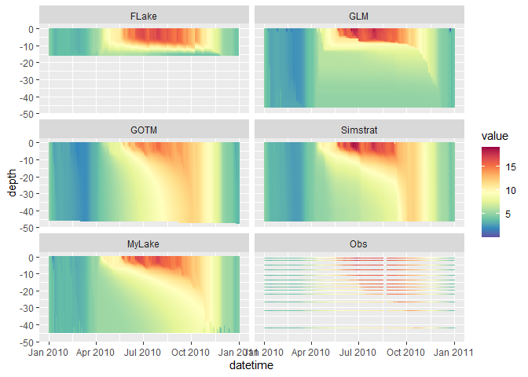
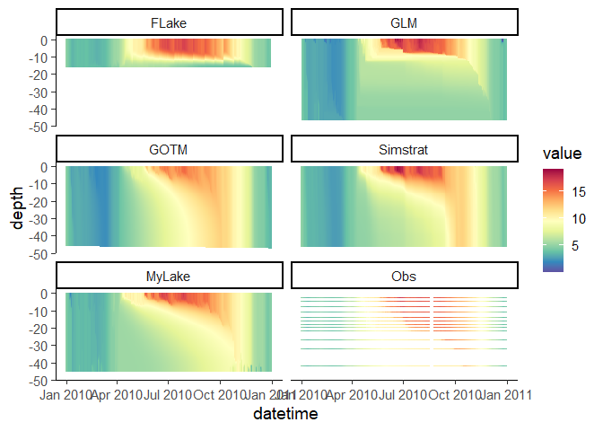
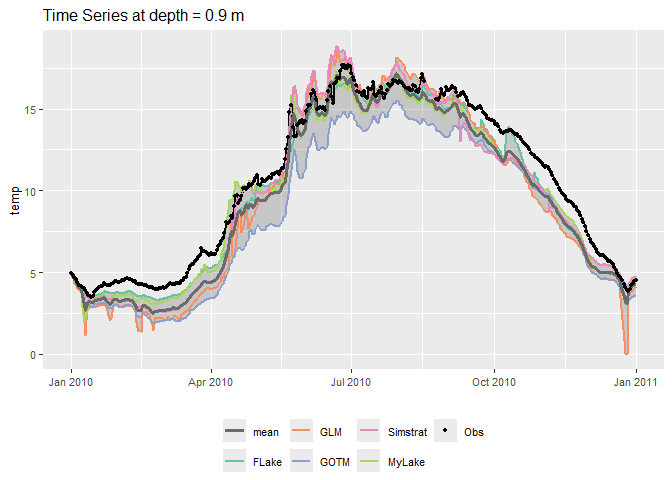
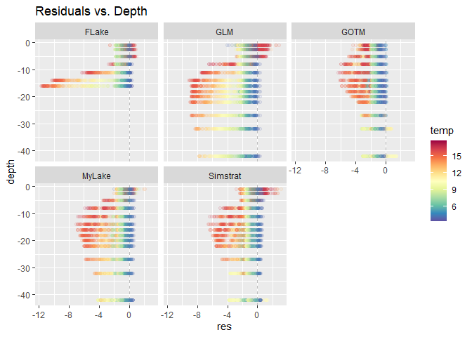

Tools for running an ensemble of lake models using standardised input data. Lake models currently incorporated are Freshwater Lake Model (FLake), General Lake Model (GLM), General Ocean Turbulence Model (GOTM) (lake-branch), Simstrat, and MyLake.
You can find example setups here: https://github.com/aemon-j/LER_examples.
Check out our published paper LakeEnsemblR: An R package that facilitates ensemble modelling of lakes.
In v1.1, some changes occurred in the configuration file. If you want to adapt your existing setup, see: https://github.com/aemon-j/LakeEnsemblR/wiki/From-v1.0-to-v1.1
Installation
Prior to installing the package, you will need to install the packages which run the models and the tools for manipulating model data from GitHub. It is recommended to do this each time before testing to ensure all packages are up-to-date as parallel development might be ongoing.
# install.packages("remotes")
remotes::install_github("GLEON/rLakeAnalyzer")
remotes::install_github("aemon-j/GLM3r", ref = "v3.1.1")
remotes::install_github("USGS-R/glmtools", ref = "ggplot_overhaul")
remotes::install_github("aemon-j/FLakeR", ref = "inflow")
remotes::install_github("aemon-j/GOTMr")
remotes::install_github("aemon-j/gotmtools")
remotes::install_github("aemon-j/SimstratR")
remotes::install_github("aemon-j/MyLakeR")Following this you can install LakeEnsemblR from Github with:
remotes::install_github("aemon-j/LakeEnsemblR")Should you run into unexpected installation issues, please have a look at this page: https://github.com/aemon-j/LakeEnsemblR/wiki/Installation-issues
Visualize
You can download PyNcView, a cross-platform NetCDF viewer, for viewing the NetCDF output.
Example model run
# Load LakeEnsemblR
library(LakeEnsemblR)
#>
#>
#> _ _ _____ _ _ ____
#> | | __ _| | _____| ____|_ __ ___ ___ _ __ ___ | |__ | | _ \
#> | | / _` | |/ / _ | _| | '_ \/ __|/ _ | '_ ` _ \| '_ \| | |_) |
#> | |__| (_| | | __| |___| | | \__ | __| | | | | | |_) | | _ <
#> |_____\__,_|_|\_\___|_____|_| |_|___/\___|_| |_| |_|_.__/|_|_| \_\
#>
#>
#> https://github.com/aemon-j/LakeEnsemblR
# Copy template folder
template_folder <- system.file("extdata/feeagh", package= "LakeEnsemblR")
dir.create("example") # Create example folder
file.copy(from = template_folder, to = "example", recursive = TRUE)
#> [1] TRUE
setwd("example/feeagh") # Change working directory to example folder
# Set config file & models
config_file <- "LakeEnsemblR.yaml"
model <- c("FLake", "GLM", "GOTM", "Simstrat", "MyLake")
# Example run
# 1. Export settings - creates directories with all model setups and exports settings from the LER configuration file
export_config(config_file = config_file, model = model)
#> depths wtemp
#> 1 0.9 4.977
#> 2 2.5 4.965
#> 3 5.0 4.953
#> 4 8.0 4.941
#> 5 11.0 4.883
#> 6 14.0 4.887
#> 7 16.0 4.877
#> 8 18.0 4.986
#> 9 20.0 4.960
#> 10 22.0 4.944
#> 11 27.0 4.980
#> 12 32.0 4.951
#> 13 42.0 4.905
# 2. Run ensemble lake models
run_ensemble(config_file = config_file, model = model)
#> [1] "Running MyLake from 01/01/10 to 01/01/11..."
#> user system elapsed
#> 8.68 0.65 9.40Post-processing
# Load libraries for post-processing
library(gotmtools)
library(ggplot2)
## Plot model output using gotmtools/ggplot2
# Extract names of all the variables in netCDF
ncdf <- "output/ensemble_output.nc"
vars <- gotmtools::list_vars(ncdf)
vars # Print variables
#> [1] "temp" "ice_height" "w_level"
p1 <- plot_heatmap(ncdf)
#> [,1]
#> short_name "temp"
#> units "degC"
#> dimensions "lon lat z model member"
p1
# Change the theme and increase text size for saving
p1 <- p1 +
theme_classic(base_size = 14) +
scale_colour_gradientn(limits = c(0, 21),
colours = rev(RColorBrewer::brewer.pal(11, "Spectral")))
p1
Plot Ensemble output
# Plot ensemble mean at 0.9m
model = c("FLake", "GLM", "GOTM", "Simstrat", "MyLake")
plot_ensemble(ncdf = ncdf, model = model, var = "temp", depth = 0.9)
# Load watertemp from netCDF file as a list
wtemp <- load_var(ncdf = ncdf, var = "temp", return = "list")
#> [,1]
#> short_name "temp"
#> units "degC"
#> dimensions "lon lat z model member"
names(wtemp)
#> [1] "FLake" "GLM" "GOTM" "Simstrat" "MyLake" "Obs"
# Plot residual diagnostic plots
plots <- plot_resid(var_list = wtemp) # Plot residuals - returns a list of plots
names(plots) #
#> [1] "obs_res" "res_depth" "yday_res" "res_dist"
# Plot residuals vs. depth ("res_depth")
plots[[2]]
# Analyse the netCDF output
out <- analyse_ncdf(ncdf, model = model, spin_up = 0)
#> | | | 0% | | | 1% | |= | 1% | |= | 2% | |== | 2% | |== | 3% | |== | 4% | |=== | 4% | |=== | 5% | |==== | 5% | |==== | 6% | |===== | 7% | |===== | 8% | |====== | 8% | |====== | 9% | |======= | 9% | |======= | 10% | |======= | 11% | |======== | 11% | |======== | 12% | |========= | 12% | |========= | 13% | |========== | 14% | |========== | 15% | |=========== | 15% | |=========== | 16% | |============ | 17% | |============ | 18% | |============= | 18% | |============= | 19% | |============== | 19% | |============== | 20% | |=============== | 21% | |=============== | 22% | |================ | 22% | |================ | 23% | |================= | 24% | |================= | 25% | |================== | 25% | |================== | 26% | |=================== | 27% | |=================== | 28% | |==================== | 28% | |==================== | 29% | |===================== | 30% | |===================== | 31% | |====================== | 31% | |====================== | 32% | |======================= | 32% | |======================= | 33% | |======================== | 34% | |======================== | 35% | |========================= | 35% | |========================= | 36% | |========================== | 37% | |========================== | 38% | |=========================== | 38% | |=========================== | 39% | |============================ | 39% | |============================ | 40% | |============================ | 41% | |============================= | 41% | |============================= | 42% | |============================== | 42% | |============================== | 43% | |=============================== | 44% | |=============================== | 45% | |================================ | 45% | |================================ | 46% | |================================= | 46% | |================================= | 47% | |================================= | 48% | |================================== | 48% | |================================== | 49% | |=================================== | 49% | |=================================== | 50% | |=================================== | 51% | |==================================== | 51% | |==================================== | 52% | |===================================== | 52% | |===================================== | 53% | |===================================== | 54% | |====================================== | 54% | |====================================== | 55% | |======================================= | 55% | |======================================= | 56% | |======================================== | 57% | |======================================== | 58% | |========================================= | 58% | |========================================= | 59% | |========================================== | 59% | |========================================== | 60% | |========================================== | 61% | |=========================================== | 61% | |=========================================== | 62% | |============================================ | 62% | |============================================ | 63% | |============================================= | 64% | |============================================= | 65% | |============================================== | 65% | |============================================== | 66% | |=============================================== | 67% | |=============================================== | 68% | |================================================ | 68% | |================================================ | 69% | |================================================= | 69% | |================================================= | 70% | |================================================== | 71% | |================================================== | 72% | |=================================================== | 72% | |=================================================== | 73% | |==================================================== | 74% | |==================================================== | 75% | |===================================================== | 75% | |===================================================== | 76% | |====================================================== | 77% | |====================================================== | 78% | |======================================================= | 78% | |======================================================= | 79% | |======================================================== | 80% | |======================================================== | 81% | |========================================================= | 81% | |========================================================= | 82% | |========================================================== | 82% | |========================================================== | 83% | |=========================================================== | 84% | |=========================================================== | 85% | |============================================================ | 85% | |============================================================ | 86% | |============================================================= | 87% | |============================================================= | 88% | |============================================================== | 88% | |============================================================== | 89% | |=============================================================== | 89% | |=============================================================== | 90% | |=============================================================== | 91% | |================================================================ | 91% | |================================================================ | 92% | |================================================================= | 92% | |================================================================= | 93% | |================================================================== | 94% | |================================================================== | 95% | |=================================================================== | 95% | |=================================================================== | 96% | |==================================================================== | 96% | |==================================================================== | 97% | |==================================================================== | 98% | |===================================================================== | 98% | |===================================================================== | 99% | |======================================================================| 99% | |======================================================================| 100%
#> | | | 0% | | | 1% | |= | 1% | |= | 2% | |== | 2% | |== | 3% | |== | 4% | |=== | 4% | |=== | 5% | |==== | 5% | |==== | 6% | |===== | 7% | |===== | 8% | |====== | 8% | |====== | 9% | |======= | 9% | |======= | 10% | |======= | 11% | |======== | 11% | |======== | 12% | |========= | 12% | |========= | 13% | |========== | 14% | |========== | 15% | |=========== | 15% | |=========== | 16% | |============ | 17% | |============ | 18% | |============= | 18% | |============= | 19% | |============== | 19% | |============== | 20% | |=============== | 21% | |=============== | 22% | |================ | 22% | |================ | 23% | |================= | 24% | |================= | 25% | |================== | 25% | |================== | 26% | |=================== | 27% | |=================== | 28% | |==================== | 28% | |==================== | 29% | |===================== | 30% | |===================== | 31% | |====================== | 31% | |====================== | 32% | |======================= | 32% | |======================= | 33% | |======================== | 34% | |======================== | 35% | |========================= | 35% | |========================= | 36% | |========================== | 37% | |========================== | 38% | |=========================== | 38% | |=========================== | 39% | |============================ | 39% | |============================ | 40% | |============================ | 41% | |============================= | 41% | |============================= | 42% | |============================== | 42% | |============================== | 43% | |=============================== | 44% | |=============================== | 45% | |================================ | 45% | |================================ | 46% | |================================= | 46% | |================================= | 47% | |================================= | 48% | |================================== | 48% | |================================== | 49% | |=================================== | 49% | |=================================== | 50% | |=================================== | 51% | |==================================== | 51% | |==================================== | 52% | |===================================== | 52% | |===================================== | 53% | |===================================== | 54% | |====================================== | 54% | |====================================== | 55% | |======================================= | 55% | |======================================= | 56% | |======================================== | 57% | |======================================== | 58% | |========================================= | 58% | |========================================= | 59% | |========================================== | 59% | |========================================== | 60% | |========================================== | 61% | |=========================================== | 61% | |=========================================== | 62% | |============================================ | 62% | |============================================ | 63% | |============================================= | 64% | |============================================= | 65% | |============================================== | 65% | |============================================== | 66% | |=============================================== | 67% | |=============================================== | 68% | |================================================ | 68% | |================================================ | 69% | |================================================= | 69% | |================================================= | 70% | |================================================== | 71% | |================================================== | 72% | |=================================================== | 72% | |=================================================== | 73% | |==================================================== | 74% | |==================================================== | 75% | |===================================================== | 75% | |===================================================== | 76% | |====================================================== | 77% | |====================================================== | 78% | |======================================================= | 78% | |======================================================= | 79% | |======================================================== | 80% | |======================================================== | 81% | |========================================================= | 81% | |========================================================= | 82% | |========================================================== | 82% | |========================================================== | 83% | |=========================================================== | 84% | |=========================================================== | 85% | |============================================================ | 85% | |============================================================ | 86% | |============================================================= | 87% | |============================================================= | 88% | |============================================================== | 88% | |============================================================== | 89% | |=============================================================== | 89% | |=============================================================== | 90% | |=============================================================== | 91% | |================================================================ | 91% | |================================================================ | 92% | |================================================================= | 92% | |================================================================= | 93% | |================================================================== | 94% | |================================================================== | 95% | |=================================================================== | 95% | |=================================================================== | 96% | |==================================================================== | 96% | |==================================================================== | 97% | |==================================================================== | 98% | |===================================================================== | 98% | |===================================================================== | 99% | |======================================================================| 99% | |======================================================================| 100%
#> | | | 0% | | | 1% | |= | 1% | |= | 2% | |== | 2% | |== | 3% | |== | 4% | |=== | 4% | |=== | 5% | |==== | 5% | |==== | 6% | |===== | 7% | |===== | 8% | |====== | 8% | |====== | 9% | |======= | 9% | |======= | 10% | |======= | 11% | |======== | 11% | |======== | 12% | |========= | 12% | |========= | 13% | |========== | 14% | |========== | 15% | |=========== | 15% | |=========== | 16% | |============ | 17% | |============ | 18% | |============= | 18% | |============= | 19% | |============== | 19% | |============== | 20% | |=============== | 21% | |=============== | 22% | |================ | 22% | |================ | 23% | |================= | 24% | |================= | 25% | |================== | 25% | |================== | 26% | |=================== | 27% | |=================== | 28% | |==================== | 28% | |==================== | 29% | |===================== | 30% | |===================== | 31% | |====================== | 31% | |====================== | 32% | |======================= | 32% | |======================= | 33% | |======================== | 34% | |======================== | 35% | |========================= | 35% | |========================= | 36% | |========================== | 37% | |========================== | 38% | |=========================== | 38% | |=========================== | 39% | |============================ | 39% | |============================ | 40% | |============================ | 41% | |============================= | 41% | |============================= | 42% | |============================== | 42% | |============================== | 43% | |=============================== | 44% | |=============================== | 45% | |================================ | 45% | |================================ | 46% | |================================= | 46% | |================================= | 47% | |================================= | 48% | |================================== | 48% | |================================== | 49% | |=================================== | 49% | |=================================== | 50% | |=================================== | 51% | |==================================== | 51% | |==================================== | 52% | |===================================== | 52% | |===================================== | 53% | |===================================== | 54% | |====================================== | 54% | |====================================== | 55% | |======================================= | 55% | |======================================= | 56% | |======================================== | 57% | |======================================== | 58% | |========================================= | 58% | |========================================= | 59% | |========================================== | 59% | |========================================== | 60% | |========================================== | 61% | |=========================================== | 61% | |=========================================== | 62% | |============================================ | 62% | |============================================ | 63% | |============================================= | 64% | |============================================= | 65% | |============================================== | 65% | |============================================== | 66% | |=============================================== | 67% | |=============================================== | 68% | |================================================ | 68% | |================================================ | 69% | |================================================= | 69% | |================================================= | 70% | |================================================== | 71% | |================================================== | 72% | |=================================================== | 72% | |=================================================== | 73% | |==================================================== | 74% | |==================================================== | 75% | |===================================================== | 75% | |===================================================== | 76% | |====================================================== | 77% | |====================================================== | 78% | |======================================================= | 78% | |======================================================= | 79% | |======================================================== | 80% | |======================================================== | 81% | |========================================================= | 81% | |========================================================= | 82% | |========================================================== | 82% | |========================================================== | 83% | |=========================================================== | 84% | |=========================================================== | 85% | |============================================================ | 85% | |============================================================ | 86% | |============================================================= | 87% | |============================================================= | 88% | |============================================================== | 88% | |============================================================== | 89% | |=============================================================== | 89% | |=============================================================== | 90% | |=============================================================== | 91% | |================================================================ | 91% | |================================================================ | 92% | |================================================================= | 92% | |================================================================= | 93% | |================================================================== | 94% | |================================================================== | 95% | |=================================================================== | 95% | |=================================================================== | 96% | |==================================================================== | 96% | |==================================================================== | 97% | |==================================================================== | 98% | |===================================================================== | 98% | |===================================================================== | 99% | |======================================================================| 99% | |======================================================================| 100%
#> | | | 0% | | | 1% | |= | 1% | |= | 2% | |== | 2% | |== | 3% | |== | 4% | |=== | 4% | |=== | 5% | |==== | 5% | |==== | 6% | |===== | 7% | |===== | 8% | |====== | 8% | |====== | 9% | |======= | 9% | |======= | 10% | |======= | 11% | |======== | 11% | |======== | 12% | |========= | 12% | |========= | 13% | |========== | 14% | |========== | 15% | |=========== | 15% | |=========== | 16% | |============ | 17% | |============ | 18% | |============= | 18% | |============= | 19% | |============== | 19% | |============== | 20% | |=============== | 21% | |=============== | 22% | |================ | 22% | |================ | 23% | |================= | 24% | |================= | 25% | |================== | 25% | |================== | 26% | |=================== | 27% | |=================== | 28% | |==================== | 28% | |==================== | 29% | |===================== | 30% | |===================== | 31% | |====================== | 31% | |====================== | 32% | |======================= | 32% | |======================= | 33% | |======================== | 34% | |======================== | 35% | |========================= | 35% | |========================= | 36% | |========================== | 37% | |========================== | 38% | |=========================== | 38% | |=========================== | 39% | |============================ | 39% | |============================ | 40% | |============================ | 41% | |============================= | 41% | |============================= | 42% | |============================== | 42% | |============================== | 43% | |=============================== | 44% | |=============================== | 45% | |================================ | 45% | |================================ | 46% | |================================= | 46% | |================================= | 47% | |================================= | 48% | |================================== | 48% | |================================== | 49% | |=================================== | 49% | |=================================== | 50% | |=================================== | 51% | |==================================== | 51% | |==================================== | 52% | |===================================== | 52% | |===================================== | 53% | |===================================== | 54% | |====================================== | 54% | |====================================== | 55% | |======================================= | 55% | |======================================= | 56% | |======================================== | 57% | |======================================== | 58% | |========================================= | 58% | |========================================= | 59% | |========================================== | 59% | |========================================== | 60% | |========================================== | 61% | |=========================================== | 61% | |=========================================== | 62% | |============================================ | 62% | |============================================ | 63% | |============================================= | 64% | |============================================= | 65% | |============================================== | 65% | |============================================== | 66% | |=============================================== | 67% | |=============================================== | 68% | |================================================ | 68% | |================================================ | 69% | |================================================= | 69% | |================================================= | 70% | |================================================== | 71% | |================================================== | 72% | |=================================================== | 72% | |=================================================== | 73% | |==================================================== | 74% | |==================================================== | 75% | |===================================================== | 75% | |===================================================== | 76% | |====================================================== | 77% | |====================================================== | 78% | |======================================================= | 78% | |======================================================= | 79% | |======================================================== | 80% | |======================================================== | 81% | |========================================================= | 81% | |========================================================= | 82% | |========================================================== | 82% | |========================================================== | 83% | |=========================================================== | 84% | |=========================================================== | 85% | |============================================================ | 85% | |============================================================ | 86% | |============================================================= | 87% | |============================================================= | 88% | |============================================================== | 88% | |============================================================== | 89% | |=============================================================== | 89% | |=============================================================== | 90% | |=============================================================== | 91% | |================================================================ | 91% | |================================================================ | 92% | |================================================================= | 92% | |================================================================= | 93% | |================================================================== | 94% | |================================================================== | 95% | |=================================================================== | 95% | |=================================================================== | 96% | |==================================================================== | 96% | |==================================================================== | 97% | |==================================================================== | 98% | |===================================================================== | 98% | |===================================================================== | 99% | |======================================================================| 99% | |======================================================================| 100%
#> | | | 0% | | | 1% | |= | 1% | |= | 2% | |== | 2% | |== | 3% | |== | 4% | |=== | 4% | |=== | 5% | |==== | 5% | |==== | 6% | |===== | 7% | |===== | 8% | |====== | 8% | |====== | 9% | |======= | 9% | |======= | 10% | |======= | 11% | |======== | 11% | |======== | 12% | |========= | 12% | |========= | 13% | |========== | 14% | |========== | 15% | |=========== | 15% | |=========== | 16% | |============ | 17% | |============ | 18% | |============= | 18% | |============= | 19% | |============== | 19% | |============== | 20% | |=============== | 21% | |=============== | 22% | |================ | 22% | |================ | 23% | |================= | 24% | |================= | 25% | |================== | 25% | |================== | 26% | |=================== | 27% | |=================== | 28% | |==================== | 28% | |==================== | 29% | |===================== | 30% | |===================== | 31% | |====================== | 31% | |====================== | 32% | |======================= | 32% | |======================= | 33% | |======================== | 34% | |======================== | 35% | |========================= | 35% | |========================= | 36% | |========================== | 37% | |========================== | 38% | |=========================== | 38% | |=========================== | 39% | |============================ | 39% | |============================ | 40% | |============================ | 41% | |============================= | 41% | |============================= | 42% | |============================== | 42% | |============================== | 43% | |=============================== | 44% | |=============================== | 45% | |================================ | 45% | |================================ | 46% | |================================= | 46% | |================================= | 47% | |================================= | 48% | |================================== | 48% | |================================== | 49% | |=================================== | 49% | |=================================== | 50% | |=================================== | 51% | |==================================== | 51% | |==================================== | 52% | |===================================== | 52% | |===================================== | 53% | |===================================== | 54% | |====================================== | 54% | |====================================== | 55% | |======================================= | 55% | |======================================= | 56% | |======================================== | 57% | |======================================== | 58% | |========================================= | 58% | |========================================= | 59% | |========================================== | 59% | |========================================== | 60% | |========================================== | 61% | |=========================================== | 61% | |=========================================== | 62% | |============================================ | 62% | |============================================ | 63% | |============================================= | 64% | |============================================= | 65% | |============================================== | 65% | |============================================== | 66% | |=============================================== | 67% | |=============================================== | 68% | |================================================ | 68% | |================================================ | 69% | |================================================= | 69% | |================================================= | 70% | |================================================== | 71% | |================================================== | 72% | |=================================================== | 72% | |=================================================== | 73% | |==================================================== | 74% | |==================================================== | 75% | |===================================================== | 75% | |===================================================== | 76% | |====================================================== | 77% | |====================================================== | 78% | |======================================================= | 78% | |======================================================= | 79% | |======================================================== | 80% | |======================================================== | 81% | |========================================================= | 81% | |========================================================= | 82% | |========================================================== | 82% | |========================================================== | 83% | |=========================================================== | 84% | |=========================================================== | 85% | |============================================================ | 85% | |============================================================ | 86% | |============================================================= | 87% | |============================================================= | 88% | |============================================================== | 88% | |============================================================== | 89% | |=============================================================== | 89% | |=============================================================== | 90% | |=============================================================== | 91% | |================================================================ | 91% | |================================================================ | 92% | |================================================================= | 92% | |================================================================= | 93% | |================================================================== | 94% | |================================================================== | 95% | |=================================================================== | 95% | |=================================================================== | 96% | |==================================================================== | 96% | |==================================================================== | 97% | |==================================================================== | 98% | |===================================================================== | 98% | |===================================================================== | 99% | |======================================================================| 99% | |======================================================================| 100%
#> | | | 0% | | | 1% | |= | 1% | |= | 2% | |== | 2% | |== | 3% | |== | 4% | |=== | 4% | |=== | 5% | |==== | 5% | |==== | 6% | |===== | 7% | |===== | 8% | |====== | 8% | |====== | 9% | |======= | 9% | |======= | 10% | |======= | 11% | |======== | 11% | |======== | 12% | |========= | 12% | |========= | 13% | |========== | 14% | |========== | 15% | |=========== | 15% | |=========== | 16% | |============ | 17% | |============ | 18% | |============= | 18% | |============= | 19% | |============== | 19% | |============== | 20% | |=============== | 21% | |=============== | 22% | |================ | 22% | |================ | 23% | |================= | 24% | |================= | 25% | |================== | 25% | |================== | 26% | |=================== | 27% | |=================== | 28% | |==================== | 28% | |==================== | 29% | |===================== | 30% | |===================== | 31% | |====================== | 31% | |====================== | 32% | |======================= | 32% | |======================= | 33% | |======================== | 34% | |======================== | 35% | |========================= | 35% | |========================= | 36% | |========================== | 37% | |========================== | 38% | |=========================== | 38% | |=========================== | 39% | |============================ | 39% | |============================ | 40% | |============================ | 41% | |============================= | 41% | |============================= | 42% | |============================== | 42% | |============================== | 43% | |=============================== | 44% | |=============================== | 45% | |================================ | 45% | |================================ | 46% | |================================= | 46% | |================================= | 47% | |================================= | 48% | |================================== | 48% | |================================== | 49% | |=================================== | 49% | |=================================== | 50% | |=================================== | 51% | |==================================== | 51% | |==================================== | 52% | |===================================== | 52% | |===================================== | 53% | |===================================== | 54% | |====================================== | 54% | |====================================== | 55% | |======================================= | 55% | |======================================= | 56% | |======================================== | 57% | |======================================== | 58% | |========================================= | 58% | |========================================= | 59% | |========================================== | 59% | |========================================== | 60% | |========================================== | 61% | |=========================================== | 61% | |=========================================== | 62% | |============================================ | 62% | |============================================ | 63% | |============================================= | 64% | |============================================= | 65% | |============================================== | 65% | |============================================== | 66% | |=============================================== | 67% | |=============================================== | 68% | |================================================ | 68% | |================================================ | 69% | |================================================= | 69% | |================================================= | 70% | |================================================== | 71% | |================================================== | 72% | |=================================================== | 72% | |=================================================== | 73% | |==================================================== | 74% | |==================================================== | 75% | |===================================================== | 75% | |===================================================== | 76% | |====================================================== | 77% | |====================================================== | 78% | |======================================================= | 78% | |======================================================= | 79% | |======================================================== | 80% | |======================================================== | 81% | |========================================================= | 81% | |========================================================= | 82% | |========================================================== | 82% | |========================================================== | 83% | |=========================================================== | 84% | |=========================================================== | 85% | |============================================================ | 85% | |============================================================ | 86% | |============================================================= | 87% | |============================================================= | 88% | |============================================================== | 88% | |============================================================== | 89% | |=============================================================== | 89% | |=============================================================== | 90% | |=============================================================== | 91% | |================================================================ | 91% | |================================================================ | 92% | |================================================================= | 92% | |================================================================= | 93% | |================================================================== | 94% | |================================================================== | 95% | |=================================================================== | 95% | |=================================================================== | 96% | |==================================================================== | 96% | |==================================================================== | 97% | |==================================================================== | 98% | |===================================================================== | 98% | |===================================================================== | 99% | |======================================================================| 99% | |======================================================================| 100%
names(out)
#> [1] "out_df" "stats" "strat" "obs_temp"
str <- out[["strat"]]
str[str$year == 2010, ]
#> model year TsMax TsMaxDay TsMin TsMinDay TbMax TbMaxDay
#> 1 obs 2010 17.67833 179 3.48499990 13 12.760635 292
#> 3 FLake 2010 17.15400 210 3.30428004 56 6.201520 331
#> 4 GLM 2010 19.04128 172 0.01679616 359 5.007843 337
#> 6 GOTM 2010 15.52526 210 2.01707268 68 12.003445 276
#> 8 Simstrat 2010 18.85400 172 2.56730008 54 11.924000 286
#> 10 MyLake 2010 17.31223 209 1.93227196 8 10.061674 305
#> TbMin TbMinDay MaxStratDur MeanStratDur TotStratDur StratStart StratEnd
#> 1 3.463672 13 184 184.00 184 105 289
#> 3 3.457870 12 216 216.00 216 107 323
#> 4 2.675814 75 201 52.00 208 115 316
#> 6 2.131356 70 133 46.00 138 136 269
#> 8 2.598400 62 170 170.00 170 104 274
#> 10 3.168770 56 205 53.75 215 100 305
#> StratFirst StratLast MeanIceDur MaxIceDur TotIceDur IceOn IceOff FirstFreeze
#> 1 105 289 NA NA NA NA NA NA
#> 3 107 323 NA NA NA NA NA NA
#> 4 103 316 NA NA NA NA NA NA
#> 6 120 269 NA NA NA NA NA NA
#> 8 104 274 NA NA NA NA NA NA
#> 10 100 327 NA NA NA NA NA NA
#> LastThaw HiceMax HiceMaxDay
#> 1 NA 0 NA
#> 3 NA 0 NA
#> 4 NA 0 NA
#> 6 NA 0 NA
#> 8 NA 0 NA
#> 10 NA 0 NA
stats <- out[["stats"]]
stats
#> model Pearson_r Variance_obs Variance_mod SD_obs SD_mod Covariance
#> 1 FLake 0.8003687 20.90594 18.49540 4.573214 4.301486 15.73826
#> 2 GLM 0.8113353 17.35083 13.11618 4.165881 3.622016 12.23952
#> 3 GOTM 0.9619836 17.35899 14.37478 4.166858 3.791814 15.19604
#> 4 Simstrat 0.9380468 17.35899 14.56246 4.166858 3.816488 14.91434
#> 5 MyLake 0.9206550 17.35899 11.86025 4.166858 3.444240 13.21010
#> Bias MAE RMSE NSE lnlikelihood
#> 1 -2.044599 2.085880 3.479253 0.4209684 -17470.67
#> 2 -2.987429 3.045955 3.861698 0.1405189 -38978.62
#> 3 -2.142192 2.163849 2.435297 0.6583516 -18127.91
#> 4 -1.798785 1.886163 2.308331 0.6930471 -16722.49
#> 5 -1.922755 1.958657 2.548731 0.6257830 -19447.17See the vignette for further examples.
How do I setup LakeEnsemblR for my lake?
Head on over to our website for guides on how to set up your lake for LakeEnsemblR
How do I contribute new code back to the LakeEnsemblR project?
In order to contribute to this code, we recommend the following workflow:
“fork” this repository to your own personal github account
-
clone the github repository to your computer:
$git clone git@github.com:USER_NAME/LakeEnsemblR.git
modify code or add new functionality, save the code
-
add the repository master to a remote master called “upstream”
$cd LakeEnsemblR
$git remote add upstream git@github.com:aemon-j/LakeEnsemblR.git
-
before pushing your changes to your repository, pull in the current version of the aemon-j master:
$git fetch upstream
-
merge these differences with your own “master” version:
$git merge upstream/master
-
push your changes to your github repository, in addition to changes made by pulling in the aemon-j master:
$git push
submit a pull request to aemon-j master using your account at github.com
Information for macOS users
To ensure that all model binaries work, we advise you to install the specific macOS packages (currently in a separated branch):
remotes::install_github("aemon-j/GLM3r", ref = "macOS")
remotes::install_github("aemon-j/FLakeR", ref = "macOS")
remotes::install_github("aemon-J/GOTMr", ref = "macOS")
remotes::install_github("aemon-j/SimstratR", ref = "macOS")Unfortunately, this means your version of GLM will differ compared to the one included in the executables for Windows and Linux. GLM on macOS will be version 3.2.0a8 (most recent one on January 13, 2022), Windows/Linux use 3.1.1.